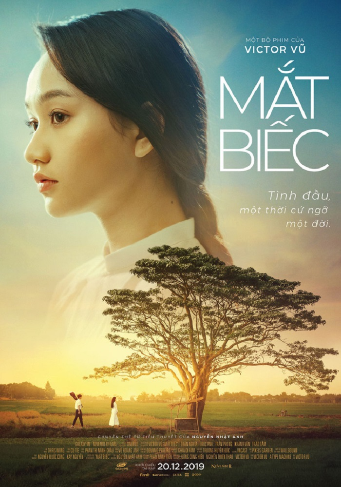

NỘI DUNG PHIM
Mắt biếc Full kể về cuộc đời của nhân vật chính tên Ngạn. Ngạn sinh ra và lớn lên ở một ngôi làng tên là làng Đo Đo (thuộc xã Bình Quế - huyện Thăng Bình - tỉnh Quảng Nam - cũng là nguyên quán của tác giả Nguyễn Nhật Ánh). Lớn lên cùng với Ngạn là cô bạn hàng xóm có đôi mắt tuyệt đẹp tên là Hà Lan. Tuổi thơ của Ngạn và Hà Lan gắn bó với bao nhiêu kỉ niệm cùng đồi sim, đánh trống trường... Tình bạn trẻ thơ dần dần biến thành tình yêu thầm lặng của Ngạn dành cho Hà Lan. Đến khi lớn hơn một chút, cả hai phải rời làng ra thành phố để tiếp tục học. Khi tấm lòng của Ngạn luôn hướng về Hà Lan và về làng, thì Hà Lan không cưỡng lại được cám dỗ của cuộc sống xa hoa nơi đô thị và ngã vào vòng tay của Dũng. Việc Hà Lan ngã vào vòng tay Dũng - một thanh niên nhà giàu, sành điệu, giỏi võ nhưng rất thiếu đứng đắn - đã làm cho Ngạn đau khổ rất nhiều, nhưng điều Ngạn cần là hạnh phúc của Hà Lan. Mỗi khi Dũng làm Hà Lan tổn thương cô lại tìm Ngạn để nói lên bầu tâm sự, điều đó lại càng làm cho Ngạn buồn thêm. Có lần Ngạn đã đánh nhau với Dũng vì Hà Lan và kết quả tất nhiên là Ngạn thua nhưng nó đã làm cho Ngạn bớt đi tính anh hùng, sẵn sàng đánh nhau mỗi khi Hà Lan bị bắt nạt. Và cũng từ đó những cảm xúc mỗi khi Hà Lan tìm đến Ngạn để giãi bầy niềm tâm sự giảm đi. Hà Lan mang thai, nhưng bị Dũng ruồng bỏ. Cô đành gửi con về cho bà ngoại chăm sóc và đặt tên là Trà Long. Tuy hiểu rõ tình yêu của Ngạn dành cho mình, Hà Lan vẫn không đáp lại vì cô hiểu rõ mình muốn sống theo một lối sống hoàn toàn khác với Ngạn. Bằng tình yêu của mình dành cho Hà Lan, Ngạn hết lòng yêu thương và chăm sóc cho Trà Long. Trà Long lớn lên trở thành cô giáo trường làng, và vô cùng yêu quý Ngạn. Trong khi ai cũng nghĩ rằng Trà Long sẽ là sự nối tiếp những gì mà Hà Lan đã bỏ dở trong đời Ngạn, thì Ngạn quyết định ra đi vì anh nhận ra rằng Trà Long chỉ là cái bóng của Hà Lan mà thôi.